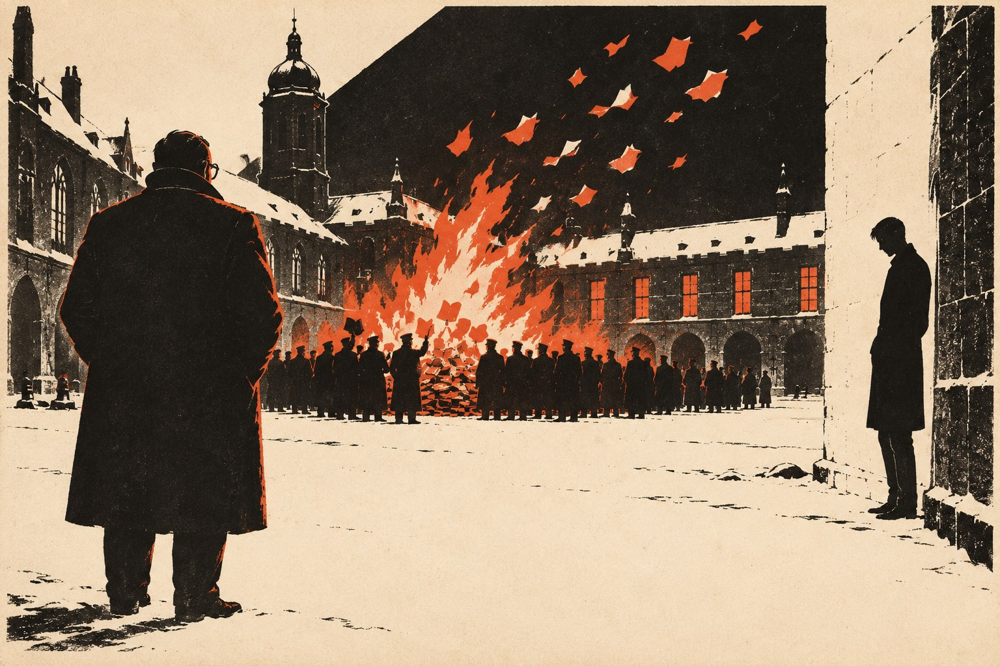

Доцент

Что злее мора, глада и огня? —
Что многих силой лишили клада души.— Андреас Грифиус, «Слёзы отечества», 1636
Глава первая
В ту весну, когда Австрия перестала быть отдельной страной, фрау Эльза Мертенс держала в Бонне писчебумажную лавку на тихой улице недалеко от Мюнстерской площади и думала, что история её никак не касается.
Лавку оставил ей муж. Он был человек аккуратный, переплётчик по ремеслу, и всю жизнь считал, что бумага, если с ней обращаться бережно, переживёт любые правительства. Правительств на его веку сменилось несколько, а он умер от воспаления лёгких в тридцать третьем году, в марте, как раз когда сменялось последнее, и фрау Мертенс иногда думала, что муж нарочно выбрал время, чтобы не смотреть. Ей досталась лавка, квартира над ней, две комнаты, одну из которых она сдавала, и привычка мужа раскладывать товар по прилавку ровными стопками, корешок к корешку.
Торговала она тетрадями, конвертами, чернилами, открытками с видами Рейна для приезжих, а на Рождество ещё и календарями. Студенты покупали у неё бумагу для конспектов, чиновники из ратуши — скрепки, старые дамы — почтовую бумагу с золотым обрезом. Кроме того, раз или два в месяц через её лавку проходили письма для племянника.
Племянник был не её. Он появился лет пять назад, вскоре после смерти мужа, молодой вежливый человек с хорошими манерами и выговором, который она не могла определить: то ли из Гамбурга, то ли откуда-то из-за границы. Он сказал, что учится в университете, что живёт у товарищей и часто переезжает, и спросил, не согласится ли фрау Мертенс принимать для него почту. За беспокойство он платил ей пять марок в месяц, а это были деньги. Письма приходили с разными марками, из разных городов, а надписаны были на её имя, с припиской «для Г.». Племянник забирал их раз в две недели, иногда чаще, клал во внутренний карман, благодарил, покупал для приличия пачку конвертов и уходил.
В сентябре прошлого года он не пришёл. Не пришёл и в октябре. Пять марок за октябрь, оставленные в августе вперёд, лежали у неё в шкатулке, а потом кончились, а письма всё приходили. Не так часто, как раньше, но приходили, и одно из них, особенно толстое, пришло в конце октября. Фрау Мертенс складывала их в нижний ящик конторки, под счета, и говорила себе, что племянник уехал на каникулы, заболел, женился и что рано или поздно вернётся. Она была женщина не любопытная, во всяком случае считала себя такой, и письма не вскрывала. Это было бы нечестно.
⁂
В среду шестнадцатого марта, через четыре дня после того, как немецкие войска вошли в Австрию и по радио весь вечер играли марши, в лавку пришли двое.
Они были в штатском, в хороших пальто и в шляпах, которые не сняли. Один был постарше, плотный, с тяжёлым подбородком, другой молодой, белокурый, с приятной улыбкой. Говорил молодой. Он извинился за беспокойство, показал какую-то карточку, которую фрау Мертенс не успела разглядеть, и спросил, давно ли она сдаёт комнату господину Фишеру.
Господин Фишер был её жилец, учитель гимназии, пожилой, тихий, немного глуховатый вдовец, который платил аккуратно, ходил по воскресеньям в церковь и по вечерам играл на скрипке, неважно, но с чувством. Фрау Мертенс сказала, что уже три года, и что он прекрасный жилец, и что никогда никаких неприятностей.
— Конечно, — сказал молодой человек. — Конечно. А гости к нему ходят?
— Редко. Иногда ученики, за книгами. Иногда кто-нибудь из коллег.
— Из коллег, — повторил молодой человек и, кажется, что-то запомнил. — А к вам, фрау Мертенс? К вам кто-нибудь ходит, кроме покупателей?
Она сказала, что нет. Она сказала это сразу, без всякой паузы, и сама удивилась, как легко это у неё вышло, и только потом, когда слово было сказано, вспомнила о нижнем ящике конторки.
Старший, который всё это время молча ходил вдоль полок и разглядывал открытки с видами Рейна, остановился и посмотрел на неё. Взгляд был не злой, скорее усталый, как у человека, который за день задал этот вопрос уже много раз.
— У вас хорошая лавка, — сказал он. — Чистая. Муж был переплётчик, если не ошибаюсь?
— Да.
— Хорошее ремесло. — Он кивнул, взял со стойки открытку, перевернул её, посмотрел на чистую обратную сторону и поставил на место. — Если господин Фишер будет говорить с вами о политике, фрау Мертенс, вы ведь нам сообщите? Он не плохой человек, мы знаем. Просто неосторожный. Сейчас такое время, что неосторожность всем дорого обходится.
Они ушли. Колокольчик над дверью звякнул им вслед, и потом в лавке стало очень тихо.
⁂
Фрау Мертенс заперла дверь, перевернула табличку надписью «Закрыто» наружу, хотя было только три часа дня, и некоторое время стояла посреди лавки, держась рукой за прилавок. Потом подошла к конторке и выдвинула нижний ящик.
Писем было одиннадцать. Она пересчитала их дважды. На всех было её имя, на всех приписка «для Г.», и на двух из одиннадцати был один и тот же почерк: на толстом, пришедшем в конце октября, и на тонком, пришедшем позавчера. Почерк был мелкий, ровный, очень аккуратный, с английскими, как ей вдруг показалось, хвостиками у букв, хотя никаких английских слов на конвертах не было. Обратного адреса не было ни на одном. Штемпели стояли южные: Мюнхен, Аугсбург, какой-то маленький город, название которого она не смогла разобрать.
Она могла бы отнести их туда, откуда пришли те двое. Она подумала об этом, честно подумала, стоя у конторки, и представила себе, как будет объяснять, что пять лет принимала письма для чужого молодого человека за пять марок в месяц и ни разу не поинтересовалась, что в них. Ей никто не поверит. Она сама бы себе не поверила. И она представила себе господина Фишера, который будет стоять в коридоре со своей скрипкой, когда за ним придут, и тех, чей мелкий аккуратный почерк лежал перед ней на конторке, и подумала, что ничего не знает ни о ком из них и не хочет знать.
Печь в задней комнате ещё не остыла после утра. Фрау Мертенс открыла дверцу, подложила полено и стала бросать письма в огонь по одному, не вскрывая. Бумага была хорошая, плотная, и горела неохотно, сначала чернела по краям, потом вспыхивала разом. Толстое письмо, пришедшее в конце октября, долго лежало на углях не загораясь, и ей пришлось поворошить его кочергой. На мгновение конверт раскрылся, и она увидела исписанные листки и одно слово, которое успела прочесть, прежде чем огонь его съел. Слово было «Китс».
Она не знала, что это значит. Она решила, что это чьё-то имя.
Потом она закрыла печь, вымыла руки, перевернула табличку обратно и до вечера продавала тетради студентам. Господину Фишеру она ничего не сказала. Через три недели за ним всё-таки пришли, но это была уже другая история, и фрау Мертенс старалась о ней не думать.
Глава вторая
За пять месяцев до того, в октябре тридцать седьмого года, в маленьком университетском городе на юге, где было три церкви, одна пивоварня и одна площадь, переименованная в честь человека, который в городе никогда не бывал, английский доцент Смайли читал лекцию о Китсе.
Слушателей было одиннадцать. В начале семестра было двадцать три, но английская поэзия в эту осень не считалась в университете предметом, которым стоит заниматься молодому немцу, а Китс, умерший в двадцать пять лет от чахотки в Риме, был к тому же поэтом, который не годился в пример ни для чего полезного. Профессор Хельбиг, заведовавший кафедрой, человек с круглым партийным значком на лацкане и отличной памятью на чужие ошибки, сказал Смайли в начале семестра, что английский язык, разумеется, необходим, поскольку Англия есть родственная германская нация, временно заблуждающаяся, но что лучше бы доцент читал студентам Киплинга. Смайли ответил, что непременно подумает, и продолжал читать Китса.
Он читал его медленно, по-английски, с переводом построчно, и сам удивлялся тому, как спокойно звучит в этой холодной аудитории с портретом на стене голос человека, который сто двадцать лет назад писал о соловье и о том, как хорошо было бы раствориться в ночи и забыть то, чего соловей никогда не знал: усталость, лихорадку, тревогу людей, которые сидят и слушают, как стонут другие. Он не комментировал. Он давно заметил, что в этой стране и в это время лучше всего действует стихотворение, которое прочитано без комментариев, и что студенты, если в них что-то осталось, сами услышат то, что нужно.
Он смотрел на них, пока читал: в этом и состояла его настоящая работа.
⁂
Смайли уже тогда выглядел старше своих лет: невысокий, полноватый, в толстых очках, в дорогом английском пиджаке, который сидел на нём так, словно был куплен для кого-то другого. Немецкие студенты сначала считали его смешным, потом скучным, а потом, те немногие, кто остался, привыкли к нему, как привыкают к старому шкафу в коридоре, и перестали замечать, чего он и добивался.
В Германию его отправили весной тридцать шестого года. Отправил, по существу, тот же человек, который девять лет назад, июльским утром, послал его, растерянного выпускника, на собеседование к странному комитету с длинным академическим названием, — его оксфордский наставник Джебеди, со своим «попробуйте, Смайли, вдруг понравится». Понравилось ли ему, Смайли не знал до сих пор. Он знал только, что согласился, что его учили чему-то в загородном доме, о котором нельзя было говорить, и что потом ему дали эту должность, эту кафедру, эти лекции о Китсе и одну-единственную обязанность, о которой не знал никто в университете: смотреть.
Он смотрел на студентов и решал, кто из них годится. Годится для чего, ему не объясняли, и он не спрашивал. Он устраивал им маленькие испытания, которые они не замечали, и записывал результаты в голове. Лучших он в конце каникул привозил в Англию, будто бы для языковой практики. А потом, вернувшись, писал письмо на адрес в Бонне, вежливое письмо о книгах, тетрадях и успехах учеников, и в этом письме, если уметь читать, было всё, что он о них думал.
Что происходило с письмами дальше, он не знал. Дошло ли хоть одно, к кому-то из его учеников подошли или нет, взяли ли их, отказались ли они, он не знал и не должен был знать. Это было правильно, и он сам понимал, что это правильно, и всё равно по ночам, лёжа в своей комнате под скошенным потолком, иногда думал о письмах и о тех, о ком в них писал.
⁂
В ту осень на последней скамье аудитории сидел Лоренц Хаак, а в первом ряду, прямо перед кафедрой, Курт Майзель.
Хаак был сыном пастора из маленького городка в Швабии, высокий, сутулый, бледный юноша с большими красными руками, которые он прятал в рукава. Он почти не говорил на семинарах, а когда говорил, то медленно, на хорошем книжном английском, и всегда по существу. Он ни разу не опоздал. Он ни разу не выразил никакого мнения о новой Германии, ни хорошего, ни плохого, и именно это сначала обратило на него внимание Смайли: в эту осень в университете не выражать мнения было труднее, чем выражать.
Майзель был всем, чем не был Хаак: красивый, живой, остроумный, сын мюнхенского адвоката, прекрасный теннисист, любимец женщин и преподавателей. Он говорил по-английски быстро, с удовольствием и почти без акцента, цитировал Байрона и Шелли и однажды после лекции, провожая Смайли до дверей, сказал тихо, доверительно, что Китс, конечно, прекрасен, но что многие в Германии, и он в их числе, втайне тоскуют по старой, свободной Англии и не во всём согласны с тем, что происходит вокруг. Сказал и посмотрел на Смайли так, как смотрят, ожидая ответа.
Смайли ответил что-то о погоде.
⁂
В последнюю субботу октября он поехал в Мюнхен, будто бы в библиотеку. В библиотеке он действительно просидел два часа над изданием Грифиуса, которое не мог достать в своём городе, а потом зашёл на почтамт и отправил толстое письмо в Бонн.
Письмо было написано по-немецки, на имя фрау Мертенс, с припиской «для Г.», и речь в нём шла о книгах. О том, что автор посылает обещанные тетради; о том, что лекции о Китсе идут своим чередом, хотя слушателей стало меньше; о том, что из учеников осени лучшим он считает молодого человека, которого в прежних письмах называл «пасторским сыном», и что этот ученик прилежен, скромен, хорошо держится на экзаменах и, по мнению автора, вполне созрел для серьёзного чтения. О другом ученике, «адвокатском», там было сказано, что он блестящ, но читает не для себя, а для учителя, и что с ним, по мнению автора, торопиться не следует.
Смайли опустил письмо в ящик, постоял немного у окошка, глядя, как почтовый служащий с одинаковым равнодушием ставит штемпели на открытки, бандероли и казённые пакеты, и пошёл на вокзал. В поезде он думал о Хааке и о том, как тот сидел на последней скамье с опущенной головой, когда Смайли читал о соловье, и шевелил губами, повторяя за ним английские слова.
Он думал, что сделал правильный выбор. Он почти не сомневался в этом и потом много лет вспоминал, что почти не сомневался.
Глава третья
Выбор был сделан раньше, летом, в горах, и Смайли знал это лучше, чем хотел бы.
Охотничий домик стоял высоко над озером, в конце лесной дороги, по которой с трудом проходила телега, и принадлежал дальнему родственнику одного из профессоров, старому баварскому графу, который охотиться давно не мог, а сдавать дом за деньги считал ниже своего достоинства и потому охотно пускал туда университетских «для пользы молодёжи». Внизу были тёмные сосны, наверху голые серые скалы, в доме оленьи рога на стенах, огромная изразцовая печь, длинный стол, за которым помещались двенадцать человек, и старый егерь со старой женой, которые кормили гостей кашей, копчёной свиной грудинкой и молоком.
Студентов было шестеро. Смайли взял их на две недели в начале августа, по обычаю, который сам же завёл год назад: прогулки в горы, английский язык за столом, вечерние чтения у печи. Профессор Хельбиг одобрил это, сказав, что физическая закалка и общение с представителем родственной нации пойдут молодым людям на пользу, а в отчёте для университетского начальства назвал поездку «английским лагерем». Смайли не возражал против названия.
⁂
Он не любил то, что делал в эти две недели, и делал это хорошо.
В первый же вечер, за ужином, он как бы невзначай рассказал Майзелю, что собирается осенью съездить в Вену, к друзьям, и просил никому не говорить, потому что кафедра не любит, когда доценты разъезжают. На следующий день, на прогулке, рассказал Хааку другое: что подумывает оставить университет и вернуться в Англию, и тоже просил никому не говорить. Ни того ни другого он делать не собирался. Это было старое, простое и немного стыдное средство, которым пользуются, вероятно, все, кто хочет узнать, кто умеет молчать.
На третий день толстый весёлый студент из Нюрнберга, по фамилии Брандль, спросил у Смайли за обедом, правда ли, что господин доцент едет в Вену и не возьмёт ли он с собой письмо к одной знакомой. Майзель, сидевший рядом, засмеялся и сказал, что Брандль ужасный болтун и что он, Майзель, рассказал ему по секрету, а тот растрепал на весь стол. Смеялись все, и Смайли тоже.
О том, что господин доцент собирается оставить университет, не спросил никто ни на третий день, ни на десятый.
⁂
На пятый день Смайли оставил на скамейке у колодца, где студенты умывались по утрам, бумажник. В бумажнике было сорок марок, удостоверение доцента и фотография, которую он нарочно туда положил: молодая англичанка на фоне моря. Он не знал этой англичанки, её фотографию он купил на распродаже в Оксфорде вместе с рамкой.
Бумажник нашёл Майзель. Он нашёл его за завтраком, принёс к столу, открыл при всех, пересчитал деньги вслух, показал всем фотографию, отпустил по поводу неё несколько вежливых и очень остроумных замечаний и с поклоном вручил бумажник Смайли, сказав, что в новой Германии честность в моде. Студенты хлопали. Смайли поблагодарил, покраснел, как положено краснеть застенчивому англичанину, и убрал бумажник в карман.
Вечером он нашёл в своей комнате, на подушке, аккуратно сложенный клочок бумаги. Кто-то написал на нём карандашом по-английски, печатными буквами: «Сэр, вы оставляете вещи там, где их могут увидеть». Больше ничего.
Смайли сидел на кровати с этим клочком в руке довольно долго. Он узнал бы почерк, если бы он был, но почерка не было, были печатные буквы, выведенные старательно и неуклюже, как выводят их люди с большими руками. Он подумал, что это был не урок и не шутка. Это было предупреждение, и написал его человек, который понял, что бумажник оставлен нарочно, и не хотел, чтобы англичанин и дальше так рисковал.
Этот человек прошёл испытание лучше, чем Смайли его задумал, и Смайли испытал от этого не удовольствие, а что-то вроде страха.
⁂
В последний вечер у печи читали вслух. Каждый читал своё. Брандль читал Гёте, путая строфы, и сам первый смеялся. Майзель прочёл наизусть кусок из Байрона, прочёл прекрасно, с жаром, с паузами, и все смотрели на него, и он знал, что на него смотрят. Хаак, когда до него дошла очередь, долго молчал, а потом сказал, что ничего не помнит наизусть, и открыл маленький потрёпанный томик. Читал он плохо, глухо, глядя в книгу, короткое стихотворение какого-то силезского поэта трёхсотлетней давности о том, что всё на свете суета и всё проходит, и что человек строит, а другой разрушает. Студенты заскучали. Майзель сказал, что это очень по-немецки и очень мрачно, и что Хааку надо бы почаще выходить на воздух.
Смайли знал это стихотворение. Он знал его наизусть с тех пор, как ему было двадцать, и, слушая, как Хаак спотыкается на старых словах, вдруг почувствовал к этому неуклюжему мальчику нежность, которую ему по должности чувствовать не полагалось.
Наверное, это и было видно. Когда чтение кончилось и все стали расходиться, Смайли поднял глаза и встретился взглядом с Майзелем. Майзель стоял у двери, весёлый, красивый, с улыбкой, и смотрел не на Смайли, а на Хаака, который всё ещё сидел у печи и закрывал свою книжку. Смотрел он недолго, секунду или две. Потом улыбнулся ещё шире, пожелал всем спокойной ночи и вышел.
Смайли запомнил этот взгляд. Он не сделал из него никаких выводов, потому что выводы, которые он мог бы сделать, были ему неприятны. Он решил, что в двадцать лет все завидуют всем, и что это пройдёт.
Глава четвёртая
В сентябре, в конце каникул, Смайли привёз Хаака в Англию.
Официально это называлось языковой практикой. Университет выдал студенту бумагу, полиция выдала заграничный паспорт и разрешение на вывоз десяти марок, отец-пастор, судя по письму, которое Хаак показал Смайли на пароме, отпустил сына с тревогой и благословением и просил господина доцента проследить, чтобы мальчик не простудился. Смайли пообещал проследить. Он сидел на палубе, завернувшись в плед, смотрел, как из тумана выходят белые скалы, и думал о том, что везёт этого мальчика в Англию для того, чтобы кто-то, чьих имён он не знает, решил, годится ли мальчик для дела, о котором мальчику ничего не известно. И о том, что, если бы кто-нибудь проделал такое с ним самим, он бы этого человека, вероятно, не простил.
Они провели три дня в Оксфорде. Смайли показал Хааку свой колледж, маленький, тёмный, ничем не знаменитый, с двором, где он когда-то несколько лет ходил по одной и той же дорожке вокруг одной и той же клумбы. Он показал ему Бодлианскую библиотеку, где Хаак простоял полчаса перед витриной со старыми немецкими книгами и вышел оттуда с таким лицом, словно встретил на чужбине родственников. Показал реку, по которой плыли лодки с девушками в белых платьях, хотя для девушек в белых платьях было уже холодновато. Показал книжные лавки на Брод-стрит.
В одной из них, у букиниста, Хаак купил на последние из тех немногих марок, которые разрешили вывезти, томик Гейне в немецком издании прошлого века, долго держал его в руках, словно не решаясь, и потом спросил у Смайли, можно ли будет провезти эту книгу обратно.
— Не знаю, — честно сказал Смайли. — Наверное, лучше не стоит.
Хаак кивнул и купил книгу всё равно.
⁂
В Лондоне Смайли повёл его в Гайд-парк, в тот угол у Мраморной арки, где по воскресеньям любой человек может встать на ящик и говорить что угодно о чём угодно, и никто не имеет права его остановить. В то воскресенье там говорили шестеро. Один требовал вернуть Англии Бога, другой — отменить налог на виски, третий, худой еврей с акцентом, рассказывал о том, что происходит в Германии, и вокруг него стояла кучка слушателей, кто-то кивал, кто-то посмеивался. Полицейский в каске стоял неподалёку, заложив руки за спину, и скучал.
Хаак стоял и слушал еврея с акцентом минут двадцать, не шевелясь. Потом повернулся к Смайли. Лицо у него было странное, словно он только что вынырнул из воды.
— Его не арестуют? — спросил он по-немецки, очень тихо.
— Нет, — сказал Смайли.
— А того, который про Бога?
— Тоже нет.
Хаак долго молчал. Потом сказал, всё так же тихо, что его отца в июле вызывали в полицию за то, что он молился с кафедры о пасторе Нимёллере, которого арестовали в Берлине, и что отец вернулся домой поздно ночью и до утра сидел в кабинете, не зажигая лампы, а утром прочёл в церкви проповедь о том, что надо повиноваться Богу больше, нежели человекам, и что мать после этой проповеди неделю не спала.
Смайли слушал и молчал. Он знал, что именно это ему и следовало услышать, что это и есть то, ради чего он привёз мальчика сюда, и что в письме в Бонн это будет называться «прочные семейные убеждения». Он знал также, что Хаак рассказывает это не потому, что его о чём-то спрашивают, а потому, что впервые в жизни стоит в месте, где можно рассказывать.
— Вы ведь не просто так меня привезли, сэр, — сказал Хаак.
Это был не вопрос, и Смайли не стал отвечать на него как на вопрос. Он сказал что-то о языковой практике, о стипендиях, о том, что хорошие студенты заслуживают того, чтобы увидеть мир. Хаак выслушал всё это вежливо, глядя на полицейского в каске, и, когда Смайли кончил, кивнул так, как кивают учителю, который сказал не то, что думает, но имеет на это право.
⁂
Последнюю неделю они провели в Корнуолле, в маленькой гостинице над морем, где кроме них жили только две пожилые сестры-акварелистки и отставной майор с собакой. Смайли любил Корнуолл больше всех мест на свете и, кажется, впервые привёз туда человека, которому хотел его показать. Они гуляли вдоль скал, мокли под дождём, ели в пабе пироги с мясом и картошкой, и Хаак смеялся над тем, как здешние жители произносят английские слова, и учился их передразнивать. Он загорел, перестал сутулиться и однажды вечером, на обрыве, глядя на закат, сказал, что, наверное, когда-нибудь вернётся сюда насовсем.
За всю неделю к ним не подошёл никто. Ни в гостинице, ни в пабе, ни на тропе над морем. Смайли знал, что так и должно быть: в Англии у него не было никакой связи с Департаментом, ему ясно сказали, чтобы он её не искал, и если кто-то и хотел посмотреть на Хаака, то посмотрел так, что ни Хаак, ни сам Смайли этого не заметили. А может быть, не посмотрел никто. Этого Смайли тоже не мог знать.
Он знал только, что всю неделю чувствовал себя тем, кем, в сущности, и был: наёмником, который ведёт чужого ребёнка на смотрины, улыбается, покупает ему пироги и потом напишет о нём отчёт. И что чувство это нисколько не мешало ему делать свою работу.
На пароме, на обратном пути, Хаак долго стоял у борта и смотрел, как белые скалы уходят в туман. Потом подошёл к Смайли, сел рядом на скамью и сказал, не поворачивая головы, что благодарен господину доценту за эти две недели и что, если господину доценту когда-нибудь понадобится его помощь, в чём бы то ни было, он может на него рассчитывать. Смайли поблагодарил. Он подумал, что за всю его недолгую службу никто ещё не предлагал ему себя так прямо и так бесполезно, потому что принять это предложение он не имел права, а отказаться от него не умел.
Глава пятая
Костёр разожгли в декабре, в пятницу, в шесть часов вечера, во внутреннем дворе главного здания университета, между фонтаном, который на зиму забили досками, и статуей основателя, который двести лет назад завещал этому месту свободу исследования.
Об этом объявили заранее. Студенческий союз вывесил плакат, на плакате было сказано, что будет произведено очищение университетских библиотек от чуждого и вредного духа, и что присутствие студентов и преподавателей желательно. Слово «желательно» было подчёркнуто. Профессор Хельбиг сказал Смайли в коридоре, что доцент, конечно, иностранец и может не приходить, но что его отсутствие будет замечено, и что сам он, Хельбиг, советовал бы прийти, исключительно из интереса к немецкой культуре. Смайли сказал, что придёт.
Собственно говоря, книги в Германии жгли уже четыре года назад, по всей стране, в одну майскую ночь, и всё самое известное сожгли тогда. Но в этом городе, по словам Хельбига, в библиотеках обнаружились остатки, просмотренные по небрежности: старые собрания, дарственные экземпляры, книги из кабинетов уволенных профессоров. Остатки нужно было уничтожить, чтобы город не отставал.
⁂
Книги привезли на двух грузовиках и свалили у фонтана, прямо на снег. Студенты в форме и без формы стояли полукругом, человек триста, а может быть, и больше. Профессора стояли отдельно, у крыльца, в шубах и шляпах, и среди них Смайли, в своём английском пальто, самый маленький и самый незаметный. Горели факелы. Оркестр студенческого союза играл марш, потом другой. Потом кто-то из руководителей союза, молодой человек с громким и неожиданно высоким голосом, произнёс речь о том, что немецкий дух должен быть очищен от всего, что его разлагает, и что сегодня здесь, в этом дворе, молодёжь возвращает себе своё наследие.
Потом стали бросать.
Бросали по очереди, подходя к груде, беря книгу и выкрикивая имя автора. Кто-то кричал заранее заученные слова, кто-то просто фамилию. Смайли стоял и слушал фамилии. Манн. Гейне. Цвейг. Ремарк. Кто-то бросил в огонь «Натана Мудрого» Лессинга, и никто его не остановил, потому что в темноте и при факелах было уже всё равно, что горит. Книги летели в огонь сотнями, страницы раскрывались в полёте, как крылья, и падали в костёр, и костёр гудел и поднимался, и в лицах студентов, освещённых снизу, было что-то, чего Смайли потом много лет не мог описать никому, даже себе. Злобы в них не было. В них было веселье людей, которым разрешили наконец сделать то, чего им всегда втайне хотелось, и сказали, что за это ничего не будет.
Майзель бросал книги одну за другой, легко, красиво, с размаху, и каждый раз что-то кричал, и вокруг него смеялись. В свете костра он был очень хорош собой. Один раз он оглянулся на крыльцо, где стояли профессора, и Смайли показалось, что он ищет взглядом его, английского доцента, и, найдя, улыбается. Может быть, это только показалось.
Хаак стоял в стороне, у стены, высокий, сутулый, с пустыми руками, засунутыми в рукава пальто. Он не бросил ни одной книги. Он стоял и смотрел в огонь, и, когда к нему подошёл кто-то из распорядителей и, видимо, что-то сказал, Хаак кивнул, но с места не сдвинулся. Распорядитель постоял, пожал плечами и отошёл. Было слишком темно и слишком много людей, чтобы это заметил кто-нибудь, кроме тех, кто смотрел нарочно.
Смайли заметил и запомнил, как запоминал всё, что могло потом пригодиться, хотя в тот вечер ещё не знал, для чего.
⁂
Он смотрел на костёр два часа, до конца, и ненавидел.
Он ненавидел так, как не ненавидел никого и ничего в жизни: ровно, спокойно, без единой вспышки, словно кто-то положил ему на грудь тяжёлый холодный камень. Он ненавидел эти лица, этот гул, этот марш, Хельбига в шубе, который стоял рядом и одобрительно кивал, речь высоким голосом, весёлость, с которой бросали в огонь книги людей, изгнанных из страны или давно умерших. И вместе с ненавистью в нём росло странное, холодное, почти неприличное удовлетворение, в котором он потом признавался себе со стыдом. До этого вечера он работал в Германии, как работают в чужой стране, вежливо, осторожно, без особых чувств. Теперь он знал своего врага в лицо, и это знание было для него чем-то вроде облегчения, потому что работать против врага легче, чем работать просто так.
Когда всё кончилось и толпа, распевая, повалила со двора к пивным, Смайли пошёл домой пешком через пустой город. У ворот он обернулся. Костёр догорал, во дворе было почти темно, и только у самых углей, спиной к воротам, стоял один человек, высокий, неподвижный. Смайли решил, что это сторож, которому велели проследить, чтобы огонь не перекинулся на стены, и пошёл дальше.
Дома он долго не мог согреться. Он сидел в своей комнате под скошенным потолком, в пальто, пил чай, который хозяйка, фрау Брукнер, принесла ему без всякой просьбы и молча, и думал о том, что завтра снова будет читать о Китсе одиннадцати слушателям, и что одним из них будет Майзель, а другим Хаак, и что теперь он знает о них обоих больше, чем знал утром. Он думал, что летом сделал правильный выбор. Мысль эта была приятна, и он позволил себе её додумать до конца.
Глава шестая
В середине февраля Хаак перестал приходить на лекции.
Сначала Смайли решил, что он болен: в городе ходил грипп, и аудитория и без того поредела. Слушателей осталось восемь, потом семь. Майзель сидел в первом ряду, как всегда, внимательный, весёлый, с хорошими вопросами, и ни разу не посмотрел на пустое место на последней скамье. Через неделю Смайли спросил у студентов после лекции, не знает ли кто, что с господином Хааком. Студенты переглянулись. Толстый Брандль сказал, что, кажется, Хаак уехал к родителям, и покраснел, говоря это, так густо, что Смайли пожалел о своём вопросе.
В субботу он пошёл туда, где Хаак снимал комнату.
Дом был на окраине, у реки, старый, деревянный, с покосившимся крыльцом. Хозяйка, маленькая женщина с испуганными глазами и руками в муке, долго не хотела открывать, а открыв, не пустила дальше прихожей. Да, господин Хаак жил здесь. Нет, его здесь больше нет. Пришли ночью, десять дней назад, двое, вежливые, вошли без стука, велели одеваться и увели. Книги забрали все, в двух мешках. Остальные вещи она отослала отцу. Больше она ничего не знает и знать не хочет, и господину доценту тоже лучше бы не знать, и, ради Бога, пусть он уйдёт, у неё дети.
Она всё-таки пустила его посмотреть комнату, потому что он стоял на крыльце и не уходил. Комната была крошечная, под крышей, с окном на реку. Кровать без белья, стол без единой бумажки, полка без книг. На подоконнике, придавленный камнем, лежал засохший букетик горного вереска, такого, какой растёт над озером у охотничьего домика. Смайли постоял, глядя на него, и ушёл, ничего не тронув.
⁂
Письмо от пастора Хаака пришло через неделю, на адрес университета. В конверте был один листок, на листке несколько строк, написанных твёрдым старомодным почерком: «Уважаемый господин доцент. Мой сын находится под стражей. Причины нам не сообщили. Он просил передать Вам, что благодарен за Англию. Прошу Вас не писать нам и не пытаться помочь, это только повредит ему. Да хранит Вас Господь». Подпись. Больше ничего.
Смайли сжёг это письмо в тот же вечер, в печке, как его учили. Он не хотел его сжигать, и ему не удалось себя уговорить, что это необходимо, и всё-таки он сжёг его.
Он знал, что должен сделать теперь: ничего. Ни у кого не спрашивать. Ни к кому не ходить. Не писать в Бонн ничего, кроме обычных писем о книгах и тетрадях, а лучше вообще не писать, пока не станет ясно, откуда пришла беда. Если пришла она из Бонна, если взяли того, кто получал его письма, или кого-то дальше по цепочке, то следующим будет он сам, и тогда ему тем более не о чем писать. Если же Хаака взяли за что-то своё, за отца, за неосторожное слово, за дружбу с кем-то, то любое движение англичанина в его сторону только ухудшит дело. Обе дороги вели к одному: сидеть тихо, читать лекции о Китсе и ждать.
Он ждал. За ним никто не пришёл. Профессор Хельбиг, встретив его в коридоре, остановился, посмотрел на него поверх очков и сказал, что слышал, будто один из студентов английского семинара оказался в неприятной истории, и что, конечно, господина доцента это никак не касается, поскольку доцент отвечает только за знание студентами английского языка, а не за их убеждения. Смайли согласился, что не касается.
⁂
Двенадцатого марта немецкие войска вошли в Австрию, и город, и без того громкий, стал оглушительным.
На всех домах повесили флаги. Оркестр студенческого союза играл на площади, переименованной в честь человека, который в городе никогда не бывал, а теперь, говорили, может и приехать. Люди обнимались на улицах, совершенно незнакомые люди, и Смайли, проходя через площадь, видел, как пожилая женщина в хорошей шляпе плачет от счастья, держа за руку внука с флажком. Колокола звонили во всех трёх церквях. В пивоварне бесплатно наливали всем, кто входил.
В тот же вечер, вопреки всему, что он себе обещал, Смайли сел и написал письмо в Бонн. Письмо было короткое и, по правилам, совершенно невинное: автор интересовался, получены ли тетради, посланные в октябре, и есть ли какие-нибудь известия о пасторском сыне, поскольку учитель беспокоится о его успехах. Он перечитал его трижды, вычеркнул «беспокоится», написал «интересуется», снова вычеркнул и оставил первое слово. На следующий день он отвёз письмо в Аугсбург и опустил в ящик у вокзала.
Ответа не было. Ответа не было и в апреле, и в мае. Смайли так никогда и не узнал, что его письмо, вместе с осенним, толстым, где говорилось о Китсе и о двух учениках, легло в нижний ящик конторки в писчебумажной лавке на тихой боннской улице и сгорело в печи шестнадцатого марта, через три дня после того, как было отправлено.
Всё это время, днём, на лекциях, и ночью, под скошенным потолком, он думал об одном и том же, и мысль эта с каждой неделей становилась проще и твёрже. Он выбрал Хаака. Он привёз его в Англию. Он написал о нём в Бонн. А потом Хаака взяли ночью, двое вежливых людей, вместе с книгами в двух мешках. Всё остальное было подробностями.
К началу лета Смайли окончательно решил, что Хаака погубил он сам, и больше к этому вопросу не возвращался.
Глава седьмая
Курт Майзель не считал себя плохим человеком, и в октябре тридцать восьмого года у него было для этого больше оснований, чем когда-либо прежде.
Он учился на последнем курсе, был заместителем руководителя студенческого союза, писал статьи в университетскую газету, которые хвалили даже в Мюнхене, и был помолвлен с дочерью ректора. После Мюнхена, после того как англичане и французы приехали к фюреру и отдали ему Судеты без единого выстрела, он чувствовал себя так, как чувствует себя человек, поставивший на скачках на лошадь, в которую никто не верил, и выигравший. Он был прав. Все, кто сомневался, оказались неправы. Англичане, которыми он когда-то так восхищался, которых так старательно изображал перед зеркалом, произнося слова Байрона с оксфордскими гласными, оказались усталыми стариками с зонтиками, готовыми подписать что угодно, лишь бы их оставили в покое.
Об английском доценте он теперь думал с лёгким презрением и с чем-то ещё, что сам называл любопытством.
⁂
О Хааке он думал редко. Когда думал, то без всякого удовольствия, но и без того, что у пасторов называется раскаянием.
В ту ночь, в декабре, после костра, он вернулся во двор университета за перчатками. Перчатки были хорошие, кожаные, подарок матери, и он оставил их на ступенях крыльца, когда бросал книги, и вспомнил о них только в пивной, после третьей кружки. Друзья смеялись, а он пошёл назад один, по пустым улицам, напевая.
Во дворе было темно, костёр почти погас, только угли тлели в большом чёрном круге на снегу. У углей, спиной к нему, стоял человек. Майзель узнал его сразу, по росту и по сутулой спине. Хаак стоял и смотрел вниз, потом наклонился, быстро, неловко, сунул руку куда-то в край кострища, в серый пепел, выпрямился и затолкал что-то за пазуху пальто. Потом постоял ещё немного, огляделся и пошёл к другим воротам. Майзеля он не заметил.
Когда он ушёл, Майзель подошёл к тому месту. Там, на краю пепелища, среди обгорелых переплётов, можно было разобрать несколько недогоревших страниц, и на одной из них он прочёл знакомую строчку, которую когда-то учил в гимназии, ещё до того, как её запретили учить. Гейне. Хаак вытащил из огня книгу Гейне и унёс её домой.
Майзель взял свои перчатки и пошёл обратно в пивную. Он ничего не сказал друзьям. Он не знал ещё, что сделает с тем, что видел, и знал, что сделает что-то.
⁂
В январе он написал записку. Записка была короткая и деловая, без лишних слов, как его учили писать в союзе: студент такой-то, сын пастора такого-то, известного своими проповедями, в ночь после очистительного костра похитил с места сожжения запрещённую литературу, имеет, по-видимому, связи с иностранцами, в конце каникул выезжал в Англию. Он подписал её своим именем. Он не видел причин её не подписывать: он делал то, что делал бы на его месте любой порядочный немец.
О причинах, по которым он её написал, он думал меньше, чем о самой записке. Если бы его спросили, он сказал бы, что это долг. Если бы его спросили очень настойчиво и наедине, он, может быть, признался бы, что это Англия. Что англичанин в смешных очках, который две недели в горах улыбался ему, Майзелю, смеялся его шуткам, хлопал его Байрону, в конце лета повёз в Англию не его, а этого неуклюжего пасторского сына, который не мог прочесть наизусть ни одной строчки. Майзель тогда сделал вид, что ему всё равно. Он даже пошутил на эту тему со студентами. Но он помнил, как англичанин смотрел на Хаака в последний вечер у печи, когда тот бубнил своего силезского поэта, и ему этот взгляд не понравился.
Хаака забрали в феврале. Весной Майзель слышал, что его держали в Мюнхене, а потом отправили в лагерь под Дахау, на перевоспитание, и что отец-пастор ездил хлопотать и вернулся ни с чем. Майзель отметил это про себя и больше о Хааке не думал. Перевоспитание, полагал он, пойдёт Хааку на пользу.
⁂
Оставался англичанин.
В сентябре, на одном вечере в союзе, Майзель познакомился с человеком из службы безопасности, невысоким, лысеющим, очень вежливым, который приезжал из Мюнхена читать студентам лекцию о бдительности. После лекции они выпили по рюмке, и Майзель, между прочим, без всякого нажима, рассказал ему о доценте. О том, что доцент возит студентов в горы. О том, что доцент возит студентов в Англию. О том, что доцент, похоже, очень интересуется тем, что студенты думают, и задаёт им вопросы, вроде бы шутливые. О бумажнике у колодца, который он, Майзель, тогда принял за рассеянность, а теперь, по зрелом размышлении, принимает за что-то другое. Вежливый человек слушал внимательно, кивал, ничего не записывал и, прощаясь, пожал Майзелю руку и сказал, что такие наблюдательные молодые люди нужны Германии.
Что было дальше, Майзель не знал. Он знал только, что в конце октября английский доцент объявил на кафедре, что по семейным обстоятельствам уезжает в Англию, не дожидаясь конца семестра, и что профессор Хельбиг на прощание пожал ему руку и сказал несколько любезных слов о немецко-английской дружбе.
В последний день октября Майзель случайно оказался на вокзале. Он провожал невесту, уезжавшую к тётке в Штутгарт, и, когда поезд невесты ушёл, увидел на соседней платформе невысокую полную фигуру в английском пальто, с одним чемоданом. Англичанин стоял у вагона и протирал очки широким концом галстука.
Майзель подумал, не подойти ли. Потом приподнял шляпу. Англичанин поднял глаза, увидел его, узнал, на мгновение замер, а потом вежливо, очень вежливо кивнул, надел очки и вошёл в вагон.
Майзель стоял на платформе, пока поезд не ушёл, и думал о том, что англичанин, кажется, так ничего и не понял. Мысль была ему приятна.
Глава восьмая
Утром десятого ноября фрау Мертенс вышла из лавки с совком и веником, потому что надо было что-то делать, а ничего другого она придумать не могла.
Ночью она почти не спала. Около двух часов на улице начался шум, сначала голоса, потом звон, долгий, рассыпчатый, такой, какой бывает, когда бьют большое стекло, потом опять голоса и чей-то смех. Она лежала, не зажигая света, и слушала. Утром, когда рассвело, она увидела в окно, что шум был у часовщика Розенталя, через три дома от неё, и что витрины у Розенталя больше нет, а то, что было за витриной, часы, будильники, коробочки с цепочками, лежит на тротуаре вперемешку со стеклом, и что прохожие обходят это место, не глядя, как обходят лужу.
Самого Розенталя не было. Двери его лавки были распахнуты, внутри всё перевёрнуто. Соседка из дома напротив, жена почтового чиновника, сказала фрау Мертенс шёпотом, что старика увели ночью вместе со взрослым сыном и что над старым городом с утра стоит дым, потому что горит что-то большое, и лучше не ходить и не смотреть.
Фрау Мертенс не пошла смотреть. Она мела стекло перед домом Розенталя, медленно, аккуратно, сгребая его в совок и ссыпая в ведро. Никто ей этого не поручал, и, если бы её спросили, зачем она это делает, она не смогла бы ответить. Может быть, затем, чтобы дети, которые пойдут в школу, не порезали ноги. Может быть, потому, что её муж всю жизнь считал, что вещи должны лежать на своих местах, а стекло на тротуаре лежало не на своём. Часы и будильники она собрала отдельно, в коробку, и поставила внутрь лавки, на прилавок, и прикрыла дверь. Ни один из будильников не шёл.
Двое прохожих посмотрели на неё с любопытством, один с неодобрением. Никто ничего не сказал.
⁂
Вернувшись в лавку, она вымыла руки и некоторое время стояла у конторки.
В нижнем ящике снова лежало письмо. Одно. Оно пришло в начале ноября, неделю назад, и с первого взгляда на конверт она узнала мелкий аккуратный почерк с английскими хвостиками у букв, тот самый, который сожгла весной. Штемпель на этот раз был мюнхенский, от тридцатого октября. Письмо было тонкое, в один листок, не больше, такое, какое пишут, прощаясь. На конверте было её имя и приписка «для Г.».
Всю неделю она не знала, что с ним сделать. Сжечь сразу не поднялась рука: ей казалось, что весной она сожгла что-то важное, что-то, что кто-то кому-то очень хотел сказать, и что этот кто-то, может быть, до сих пор ждёт ответа. Отнести его туда, откуда весной приходили двое вежливых людей, она тоже не могла. Господина Фишера, который в апреле ушёл со своими вежливыми гостями, держа под мышкой скрипку, потому что ему не разрешили её оставить, она больше не видела. Его комната стояла пустая. Новых жильцов она не пускала.
Она достала письмо из ящика, повертела его в руках и в первый раз за пять лет подумала о том, чтобы его вскрыть.
Потом она подумала о часовщике Розентале, у которого была одна витрина и один взрослый сын, и об этой ночи, и о смехе на улице, и о соседке, которая говорила шёпотом. И о том, что, если вскроешь, будешь знать. А знать, как она теперь понимала, было самым опасным из всего, что может позволить себе вдова переплётчика с писчебумажной лавкой на тихой улице.
Она отнесла письмо в заднюю комнату и положила его в печь. Конверт загорелся сразу, тонкий, сухой, и сгорел за минуту, не оставив ни одного слова, которое она могла бы прочесть, даже если бы захотела. Она подождала, пока он прогорит до конца, и закрыла дверцу.
Потом она подумала о слове, которое прочла весной в огне, единственном слове из всех писем. Китс. Она до сих пор не знала, кто это. Она решила, что это, наверное, тот самый Г., или его друг, или кто-то, о ком ему писали, и что, может быть, его тоже увели ночью, двое вежливых людей, как увели господина Фишера и часовщика Розенталя. Ей стало его жалко, этого неизвестного Китса. Она перекрестилась, хотя не была особенно набожна, и пошла открывать лавку.
День был обычный. Студенты покупали тетради. Чиновник из ратуши купил скрепки. Пожилая дама долго выбирала почтовую бумагу с золотым обрезом, чтобы написать сыну в Гамбург. О том, что случилось ночью, в лавке никто не обмолвился ни словом, и фрау Мертенс тоже.
Кода
Весной сорок шестого года Стид-Асприй уезжал в Индию и перед отъездом позвал на прощальный ужин человек восемь из тех, кто остался в живых.
Ужинали в клубе на Пэлл-Мэлл, в маленьком отдельном зале на втором этаже, где на стенах висели потемневшие портреты неизвестных генералов, а камин дымил так же, как, вероятно, дымил при королеве Виктории. Еда была плохая, послевоенная, по закону не дороже пяти шиллингов, зато вина оказалось много, хорошего, из довоенных запасов, которые клуб каким-то чудом сберёг. Стид-Асприй сидел во главе стола, худой, загорелый, с белыми усами, и говорил больше всех. Он говорил об Индии, куда ехал по делам, не имевшим, как он уверял, ничего общего с прежними, о Дели, о жаре, о том, что англичанам там осталось недолго, и что это, пожалуй, к лучшему.
Смайли сидел в дальнем конце стола и почти не пил. Осенью сорок пятого его уволили, вежливо, с благодарностью и небольшой пенсией, сказав, что война кончилась и что такие, как он, теперь нужнее в университетах, чем в той службе, в которой он прослужил полтора десятка лет. Он и в самом деле собирался вернуться в Оксфорд и снова заняться немецкими поэтами семнадцатого века, о которых мечтал в двадцать лет. Он был женат меньше года. Энн не пришла на ужин: она сказала, что ужины со шпионами наводят на неё тоску, и ушла в театр с кем-то из кузенов.
О Джебеди за столом не говорили. Джебеди в сорок первом году сел в поезд в Лилле вместе со своим радистом, и больше о них никто ничего не слышал. Смайли думал о нём весь вечер, глядя на портреты генералов. Это Джебеди когда-то сказал ему: «Попробуйте, Смайли».
⁂
К концу ужина, когда подали портвейн и разговор стал беспорядочным, как бывает всегда, когда пожилые люди вспоминают молодость, Стид-Асприй вдруг повернулся к Смайли через весь стол.
— Джордж. Я всё хотел тебе сказать. Твои немецкие мальчики, перед войной. Ты ведь, кажется, до сих пор думаешь…
Он замолчал, потому что в эту минуту дверь открылась и вошёл официант с запиской для одного из гостей, и гость этот, полковник с красным лицом, громко выругался, прочитав её, и все засмеялись, и разговор перешёл на что-то другое.
— Так вот, Бонн ведь… — снова начал Стид-Асприй, когда всё успокоилось, и снова не договорил, потому что сосед справа спросил его о пароходе, и он стал рассказывать о пароходе.
Смайли ждал, что он вернётся к этому. Он ждал до конца вечера, пока гости не стали подниматься, пока не принесли пальто, пока Стид-Асприй, стоя у дверей, не стал пожимать всем руки. Он мог бы подойти и спросить. Он подумал об этом и понял, что не подойдёт.
Он подумал, что восемь лет живёт с одной уверенностью, неприятной, но твёрдой, к которой давно привык. Он выбрал мальчика. Он привёз его в Англию. Он написал о нём письмо. Мальчика забрали ночью, двое вежливых людей. Всё остальное было подробностями, и Смайли понимал, что любая подробность, которую сейчас может сказать ему Стид-Асприй, может оказаться утешительной, а может оказаться страшнее, и что у него нет сил ни на то, ни на другое.
Когда он подошёл попрощаться, Стид-Асприй задержал его руку в своей чуть дольше, чем полагалось, и посмотрел на него внимательно, словно собираясь что-то сказать. Смайли улыбнулся, пожелал ему счастливого пути и сказал, что Индия, должно быть, очень красива в это время года.
— Очень, — сказал Стид-Асприй. — Береги себя, Джордж. Ты всегда слишком много на себя берёшь.
⁂
Домой он шёл пешком, через Сент-Джеймсский парк, где в темноте над водой кричали утки, а у воды ещё стояли временные бараки военных лет. Шёл медленно. Было тепло, по-весеннему влажно, пахло мокрой землёй.
На мосту через пруд он остановился, достал из кармана платок и протёр очки. Ему вспомнилась вдруг, без всякой связи, маленькая комната под крышей, у реки, кровать без белья и засохший букетик горного вереска на подоконнике, придавленный камнем. Он не знал, жив ли Хаак. Он никогда не пытался узнать, и теперь, когда война кончилась и можно было бы попробовать, понял, что не станет пробовать и сейчас.
Дома Энн ещё не было. Смайли зажёг лампу, снял с полки книгу, старое издание Грифиуса, такое же, над каким просидел в мюнхенской библиотеке в октябрьский день, когда отправлял письмо в Бонн, и которое уже после войны нашёл у лондонского букиниста, и открыл его на стихотворении о том, что всё на свете суета. Он читал его долго, медленно, по-немецки, шевеля губами, как когда-то шевелил губами на последней скамье неуклюжий мальчик с большими красными руками, повторяя за ним английские слова. Потом закрыл книгу и сидел так, пока не услышал на крыльце смех Энн и звук отъезжающего такси.